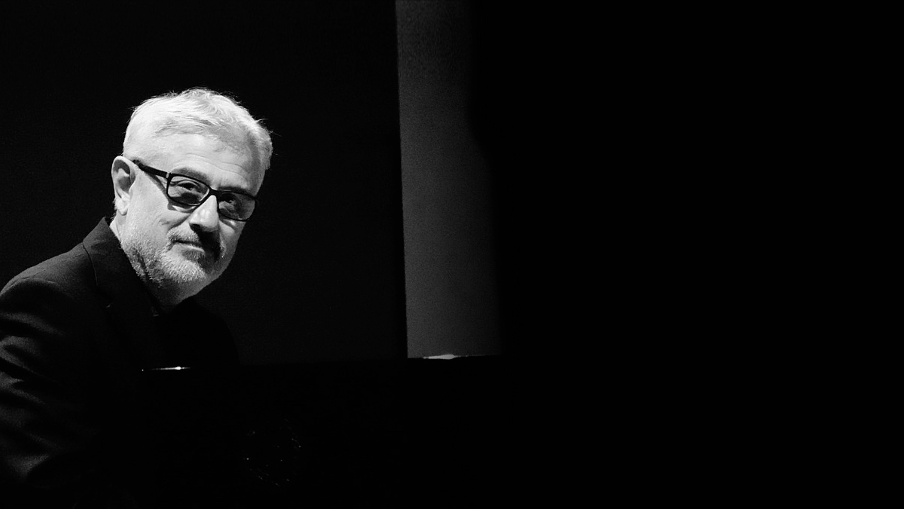

International Sonosfera® Ambisonics Competition “Eugenio Giordani”
12 May 2023 Pesaro, Italy
Patronage
+ Comune di PESARO
+ Sonosfera®
+ Conservatorio Rossini
Steering Committee
+ Nicola Casetta
+ Carmine Emanuele Cella
+ Tommaso Giunti
+ David Monacchi
+ Alessandro Petrolati
+ Daniele Vimini
Guest Jury
+ Natasha Barrett - President (NSAM - Norway)
+ Chris Chafe (CCRMA - USA)
+ Rainer Kern (Germany)
+ Otolab (Italy)
+ Barry Truax (SFU - Canada)
History

Eugenio Giordani
ISAC competition is based on an idea of Eugenio Giordani, emeritus professor of Electroacoustic Music Composition at the Conservatory G. Rossini of Pesaro, who imagined a competition for the Sonosfera® in early 2020 just before the first wave of the pandemic. Eugenio passed away due to Covid-19 on April 4th 2020. As Director of LEMS (Laboratorio Elettroacustico per la Musica Sperimentale funded in 1971) for more than 40 years, Giordani has been the master and inspiration of several generations of electroacoustic composers, among whom all the organizers of this ISAC-2023 competition. Together with David Monacchi, Eugenio was the promoter of SPACE (Soundscape Projection Ambisonic Control Engine) the first 21.1 full-periphonic studio and listening venue in Italy, a facility built specifically for 3D-audio production and music composition, opened to the public in 2013. ISAC competition is thus permanently dedicated to Eugenio Giordani, whose work and tools in musical informatics, sound engineering and aided electroacoustic composition still inform current practices of composers and sound designers on a local and global scale.
Brief Bio
Eugenio Giordani (Pesaro-Italy-1954-2020) has been a composer, electronic engineer, full professor of Electronic Music, jazz pianist and organist. He studied at the Conservatory of Music G. Rossini of Pesaro, where he graduated in 1973 in Pianoforte Principale (M.I. Biagi, S. Cafaro, L. De Sabbata) and in 1977 in Electronic Music (W.Branchi), alternating experiences in pop music and jazz. He also graduated in 1980 in Electronic Engineering at University of Ancona. He has been a researcher from 1982 to 1989 in the field of digital techniques of sound production at the Iselqui (Electronic Institute for Industrial Quality) in Ancona (now Iselqui Technology). He has published several scientific and musical articles. As a composer, with the piece Voicings won an honorable mention to the XI International Music Competition in Bourges in 1989 while with the composition Solaria, won the third prize at the international competition Newcomp United States (New England) and the final selection to the XVII International Music Competition of Bourges. During his entire career he pursued an intense activity of seminars and meetings in universities and research centers on digital sound synthesis as a long-term programmer within C-Sound and Kyma-Capybara languages. He led several projects for national and international brands in the field of manufacture of electronic musical instruments and digital devices, the last ones being the Oberheim DB5 (Hammond organ clone) and the Viscount Physis Piano (a digital piano based on physical modelling). Since 1981 he has been the Chair of Electronic Music and direction of LEMS (Laboratorio Elettronico per la Musica Sperimentale) at the Conservatory G. Rossini in Pesaro. From 2005 to 2007 he was a member of the Academic Council of the same Institution. In 2019 Eugenio has been the co-organizer of the 5th International C-Sound Conference in Cagli (Italy). Over the last years of his career Eugenio has played intensely in the rock band Log 2 collaborating lately with Brian Auger and several jazz bands centered on his lead piano playing.